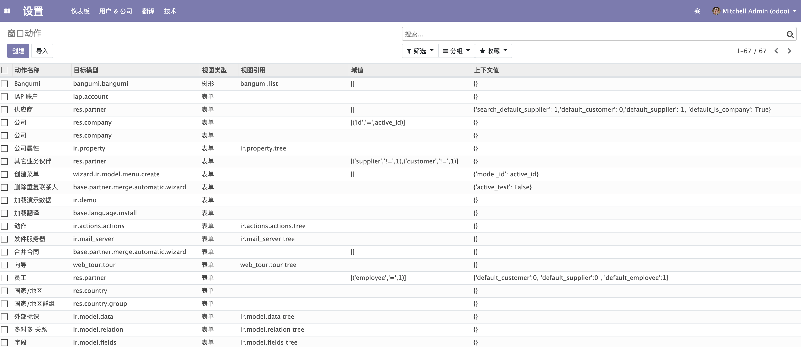
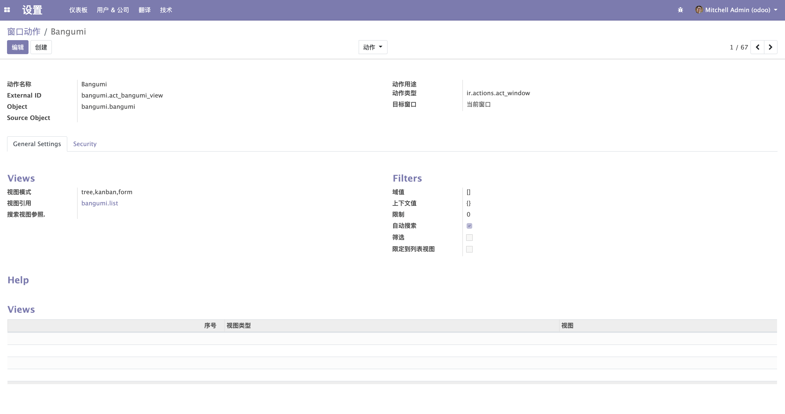
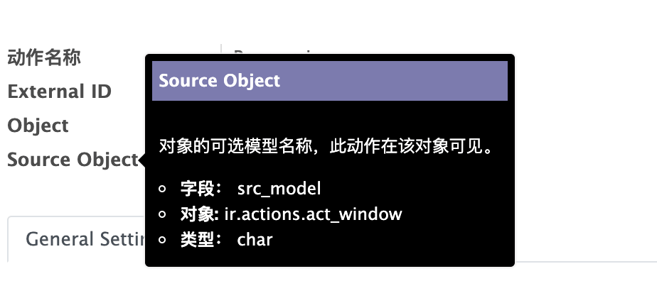

窗口动作
在第 5 章和第 6 章我们都使用到了一个 act_window 的标签定义在 menus.xml 中。
<act_window
id="act_bangumi_view"
name="Bangumi"
res_model="bangumi.bangumi"
view_mode="tree,kanban,form"
view_id="view_bangumi_bangumi_list"
/>
这就是一个窗口动作的定义。他还有另一种定义的写法。
<record id="act_bangumi_view" model="ir.actions.act_window">
<field name="name">Bangumi</field>
<field name="res_model">bangumi.bangumi</field>
<field name="view_mode">tree,kanban,form</field>
<field name="view_id" ref="view_bangumi_bangumi_list"/>
</record>
是不是一下子就头大了，本来定义这个 XML 就不好记忆，为啥又多了一种写法。我该怎么记？
在回答你的疑惑之前，我们先来了解一下 Odoo 定义的 XML 最终都去了哪里？
其实在 XML 中定义的 <record></record> 标签指明了这是一条数据记录，最终他都会保存到数据库，而且这条记录也拥有 Model，也就是在 python 代码中也有跟我们在第 4 章定义的类一样的结构。那我们可以在哪里找到上面的 record 对应的 Model 呢？
细心的同学肯定已经发现了，record 标签有一个 model 字段，已经告诉了你它对应的 model 是 ir.actions.act_window。
接下来我们就可以利用这个关键字和全文检索在 Odoo 的源码中找到他。
💡 可能很多人还不知道怎么做全文检索，这里简单说一下。如果你是用的是 Pycharm，可以点击 Odoo 源码文件夹的主目录，右键选择 Find in Path 或者使用快捷键 ctrl + shift + F （command + shift + F）进行全文检索。如果你是用的是 Vscode 可以使用快捷键 ctrl + shift + F （command + shift + F）进行全文检索。其他工具请在搜索引擎搜索使用方法。
由于直接搜索 ir.actions.act_window 出现的关键字可能比较多，我们使用 _name = 'ir.actions.act_window' 关键字进行搜索。
用这个关键字搜索后，你可能就直接找到了这个模型的定义，模型的部分定义如下。
class IrActionsActWindow(models.Model):
_name = 'ir.actions.act_window'
_description = 'Action Window'
_table = 'ir_act_window'
_inherit = 'ir.actions.actions'
_sequence = 'ir_actions_id_seq'
_order = 'name'
# ...
我们可以从上面部分定义看到一个 _table 的属性，这个字段显式指定了这个模型对应数据库表是 ir_act_window。这里也提一下，如果这个字段没有显式指定的话，默认使用的表名是 _name 字段将 . 全部替换成 _ 后的字符串，如 bangumi.bangumi 则对应的表名为 bangumi_bangumi。
我们也可以从源码中看到这个模型定义的字段。
# 省略代码 ...
name = fields.Char(string='Action Name', translate=True)
# 省略代码 ...
view_id = fields.Many2one('ir.ui.view', string='View Ref.', ondelete='set null')
# 省略代码 ...
src_model = fields.Char(string='Source Model',
help="Optional model name of the objects on which this action should be visible")
# 省略代码 ...
view_mode = fields.Char(required=True, default='tree,form',
help="Comma-separated list of allowed view modes, such as 'form', 'tree', 'calendar', etc. (Default: tree,form)")
我们正好可以找到 <record></record> 标签中 <field> 对应的四个关键字 name、res_model、view_mode 和 view_id。
<field name="name">Bangumi</field>
<field name="res_model">bangumi.bangumi</field>
<field name="view_mode">tree,kanban,form</field>
<field name="view_id" ref="view_bangumi_bangumi_list"/>
由此我们可以猜测 Odoo 将我们在 XML 中定义的 record 当成数据，按照对应的模型和数据库表，写入了数据库中。我们可以用以下 SQL 验证一下。
psql -h 127.0.0.1 -U odoo
Password for user odoo:
psql (9.6.15)
Type "help" for help.
odoo=# select name, res_mode, view_mode, view_id FROM ir_act_window where name='Bangumi';
name | res_model | view_mode | view_id
---------+-----------------+------------------+---------
Bangumi | bangumi.bangumi | tree,kanban,form | 233
(1 row)
在 Odoo 中查看 "窗口动作" 的数据
除了用 SQL，Odoo 提供了另一种更加方便的方式查看这些数据。首先打开 debug 模式，不记得 debug 模式怎么打开可以查看第 3 章 "安装应用" 章节。
打开后点击左上角并选择「设置」，进入设置页面。然后在点击上方的「技术」菜单，选择「动作」下的「窗口动作」，就可以看到所有窗口动作的列表了。

从列表我们就可以看到我们定义的 Bangumi 动作，如果没找见的话可以用右上角的搜索功能。接下来我们点击这行记录到 Form 视图看看。

所以可以通过上述方式来查看自己定义的 Action 的属性。
💡 可以通过将鼠标悬停在字段的名称上查看字段定义的详细信息。
